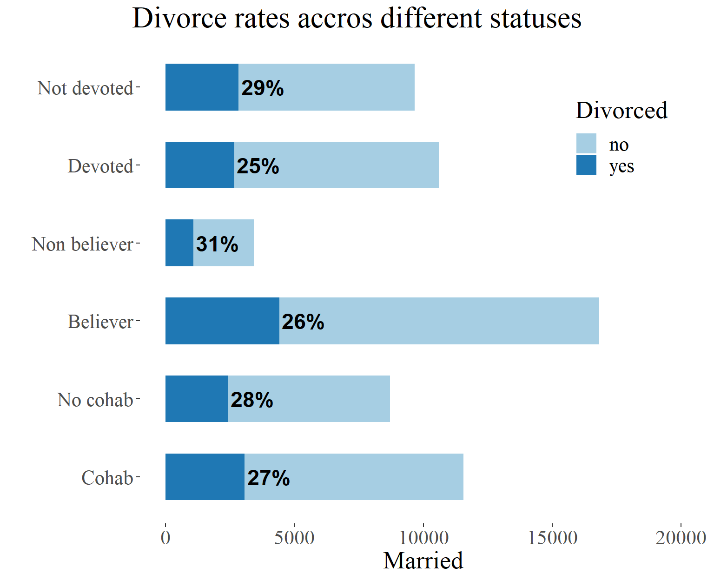

Cohabitation and Divorce
In this project, I conduct an analysis of the NSFG database in order
to test the hypothesis that cohabitation before marriage increases the
probability of divorce. I aim to test the correlation between
cohabitation and divorce and to look for other factors that may increase
the probability of divorce and factors that might have a status of
hidden correlate. To view the source code visit my GitHub repo: https://github.com/Niklewa/Cohab_nsfg
This document has been created within R studio, as a markdown
document. In this paper I will firstly describe shortly the data that I
used, then I will proceed to the description of my analysis. My analysis
consists of three parts. In the beginning, I intended to conduct this
analysis fully in R studio, however, I had to use Python language
(jupyter lab) to deal with some problems, because I didn’t find a
satisfying solution within R studio. Therefore, the first part, that is
obtaining the data and saving it in .csv format was done in jupyter
notebook. The second part, data cleaning, and wrangling were done in R,
as well as the third part, that is, proper data analysis.
In the first two parts, I was preparing the data for the main part of
this project. That’s why they will be presented in the abbreviated
version. The third part, proper analysis, consists of: testing
conditional probabilities, visualization, and chi-squared test. Methods
were chosen according to the nature of the data.
Data
National Survey of Family Growth (NSFG) is a questionnaire conducted, irregularly, in the USA. The part of the data that I was using concerned the years between 2002-2019. The survey investigates social aspects of American families. There are many interesting variables, I was concerned with questions such as: marital status, cohabitation, age, religious beliefs, and socio-political opinions.
Data documentation: https://www.cdc.gov/nchs/nsfg/nsfg_cycle6.htm
In the chosen data there were more than 70 000 respondents. A
sample of 20 000 people was adequate for my analysis because to test
various variables influence on divorce, I had to include only married
people. The major problems of this database are: the data format, the
size, and various names of the same variables. In order to deal with the
first problem, I had to apply the following method.
Data preparation
The data were stored on the NSFG web page in a rather strange
format. A single survey result was stored in .dat format, but to use it,
it had to be connected with the adequate key file in the .dct format.
Dealing with a file in a regular .dat format is not particularly
problematic, but there are less than a few satisfying solutions to this
problematic doubled format. I decided to use python for that, as I
mentioned at the beginning. Statadict package delivers an elegant
solution to that problem.
c=0
for dat,dct in zip(dat_name, dct_name):
c+=1
stata_dict = parse_stata_dict(dct)
hx = pd.read_fwf(
dat, names=stata_dict.names, colspecs=stata_dict.colspecs)\
.to_csv(r'C:\nikod\Documents\csv_files\NSFG_data_{}.csv'.format(c))
Firstly I automated the downloading process from the NSFG web
page and saved the file in two lists: dat_name and dct_name. The
function above connects .dat files with their keys and saves them in
separate .csv files. The process of naming those files is also
automated.
After obtaining the data and saving it in .csv files I proceeded to R
studio, in order to deal with the next two problems: the size of the
data, and various names of the same variables.
At first, I divided the data files into 3 groups, every group has common
names of variables. The groups were placed in separate folders. My
tactic was to create separate data frames where the variable names will
be unified. The problem was the number of variables, in some files,
there were more than 1 400 variables! To deal with it, firstly I read
the data documentation and I have chosen the variables that interest me.
Then, by specifying this data, I was able to extract only significant
variables.
setwd("C:/nikod/Documents/csv_files_0200_0610")
temp_1 <- list.files(pattern="*.csv")
col_function_1 <- function(x) {read.csv(file = x, sep = ",")[ ,c(
"caseid", "age_a", "marstat", "reldlife", "religion", "samesex",
"gayadopt", "lifeprt", "timesmar", "staytog", "sxok18",
"attnd14", "achieve", "lifprtnr", "cmintvw", "fmarit"
)]}
dat_list_1 <- lapply(temp_1, col_function_1)
The code above returns the list of data frames with specified variables, I repeated this process for all of the groups. Initially, there were three groups, but later I added three more, that were grouped by gender, and in the same way, I have dealt with different names of variables.
At the end I simply merged those data frames together, and with that I obtained a usable version of the data that interests me:
dat_nsfg <- full_join(dat_genders, dat_main, "caseid")
write.csv(dat_nsfg, "C:\\nikod\\Documents\\main_data\\dat_nsfg.csv",
row.names = FALSE)
Let’s have a quick look at the data frame:
## caseid marrend livtogn agemarr sex abortion pill mornpill condom age_a
## 1 36133 NA NA NA 1 NA NA NA NA 23
## 2 36636 NA NA NA 1 NA NA NA NA 25
## 3 41125 NA NA NA 1 NA NA NA NA 16
## 4 23607 NA NA NA 1 NA NA NA NA 28
## 5 40814 NA NA NA 1 NA NA NA NA 25
## 6 39362 NA NA NA 1 NA NA NA NA 25
## marstat reldlife religion samesex intvwyear lifprtnr timesmar attnd14 fmarit
## 1 6 2 3 1 2010 5 NA 3 5
## 2 6 2 4 1 2010 5 NA NA 5
## 3 6 NA 1 1 2010 1 NA 6 5
## 4 6 NA 1 1 2007 6 NA NA 5
## 5 2 NA 1 2 2010 10 NA NA 5
## 6 6 1 3 2 2010 0 NA NA 5
## gayadopt lifeprt sxok18 staytog prvntdiv achieve
## 1 1 5 2 2 NA 3
## 2 1 5 1 2 NA 4
## 3 1 1 1 2 NA 3
## 4 1 6 1 2 NA 4
## 5 2 7 2 3 NA 3
## 6 2 NA 2 2 NA 3As you can see, there are many missing values, but I will deal with them in the next part of this project.
Data analysis
The aim of the third file is to test a hyphotesis that cohabitation before marriage increases the probability of divorce. Firslty i defined libraries that I will use and dealt with missing variables.
# Libraries
library(dplyr)
library(tidyr)
library(stringr)
library(purrr)
library(ggplot2)
library(ggthemes)
library(scales)
dat_nsfg$marrend[is.na(dat_nsfg$marrend)] <- 99
dat_nsfg$livtogn[is.na(dat_nsfg$livtogn)] <- 99
dat_nsfg$lifprtnr[is.na(dat_nsfg$lifprtnr)] <- 0
dat_nsfg$reldlife[is.na(dat_nsfg$reldlife)] <- 0
In the next step I defined some functions that will help in the process of analysis and with dplyr package I defined the data frame with by specifying the variables:
fun_cohab <- function(x){
ifelse((x == 9 | x == 8 | x == 99 ), 99, ifelse((x == 5 ), 0, 1))
}
fun_reldlife <- function(x){
ifelse((x == 8 | x == 0 ), 0, ifelse((x == 9 ), 2, x))
}
# The values are chosen according to the data documentation
dat_nsfg1 <- dat_nsfg %>%
mutate(divorced = ifelse ((fmarit == 3 | marrend == 2), 1, 0)) %>%
mutate(ever_married = ifelse ((fmarit == 5 ), 0, 1)) %>%
mutate(cohab_bef_marr = fun_cohab(livtogn)) %>%
mutate(separated = ifelse ((fmarit == 4), 1, 0)) %>%
mutate(reldlife = fun_reldlife(reldlife)) %>%
mutate(cohab_ever = ifelse ((livtogn == 1 | marstat ==2 ), 1, 0)) %>%
mutate(div_separated = ifelse((separated == 1 | divorced == 1), 1, 0)) %>%
select(caseid, sex, divorced, separated, div_separated, ever_married,
cohab_bef_marr, cohab_ever, intvwyear, age_a,
lifprtnr, religion, reldlife)
In the next step I have limited the sample to the people that are, or were married.
## caseid sex divorced separated div_separated ever_married cohab_bef_marr
## 1 23030 1 0 1 1 1 1
## 2 20600 1 1 0 1 1 1
## 3 39612 1 0 1 1 1 1
## 4 38464 1 1 0 1 1 0
## 5 20678 1 0 1 1 1 0
## 6 35261 1 0 1 1 1 1
## cohab_ever intvwyear age_a lifprtnr religion reldlife
## 1 1 2007 29 5 4 1
## 2 1 2008 41 5 2 2
## 3 1 2009 43 3 1 0
## 4 0 2010 29 1 4 1
## 5 0 2006 41 30 1 0
## 6 1 2010 44 15 3 2
With that, we can do some counting:
- \(27\%\) of people that have been
married at least once, were at least once divorced
- \(35\%\) were divorced or
separated
- \(56\%\) people that cohabited before
marriage have divorced
- \(58\%\) of people that divorced or
separated have cohabited
By looking at these values, one can say that there is a visible
difference, people that cohabited more commonly end their marriage with
a divorce. But the Bayesian approach will unravel to us dependencies
that are not visible without taking the initial probability of
cohabiting. As it turns out, the majority of people cohabited before
marriage, and this fact influences the data above.
# Bayes theorem: P(A|B) = P(A 'intersection' B) / P(B)
bayes_fun <- function(x,y,z){
(x/y)/(z/y)
}
# probability of a divorce for people that cohabited
cond_P_DC <- bayes_fun(c_div, all_rell_married, cohab) #0.266
# probability of a divorce for people that not cohabited
cond_P_DnC <- bayes_fun(nc_div, all_rell_married, no_cohab) #0.278
# probability of a divorce for atheists
cond_P_DA <- bayes_fun(divorced_atheist, all_rell_married, atheists) #0.31
# probability of a divorce for believers
cond_P_DB <- bayes_fun(divorced_believer, all_rell_married, believers) #0.26
The difference in probability of getting a divorce is slightly
different in favor of not cohabiting, which is rather odd. But between
being a believer and an atheist there is a much bigger difference. Let’s
represent these dependencies visually to get a better look at
them.
To create the plots below I have used the ggplot2 package, which is a
powerful visualization tool. The trick to making those plots was
creating a data frame that suits that purpose. The process of making
those data frames was repetitive and boring, if you are curious about
how I did it, check out the source code. It’s pretty clean and well
commented, so you should not have a problem with navigation in the
code.

The plot on the left represents nominal values, it is easy to draw
hasty conclusions if one is not paying attention to the initial
probability distribution. Far more informative is a plot on the right,
it represents the initial probability distribution. In my search for
dependencies between variables, the plot on the right is very helpful.
As you can see, cohabiting has less impact on the probability of getting
a divorce than being a believer.
Now, let’s see a similar plot that includes separation status along with
divorce.

The tendencies are similar, there is no meaningful difference in the proportion. Still, religion has the biggest influence on the divorce rate. Being a believer or being a devoted believer reduces the chances of getting a divorce. Religion is a base belief, therefore it can have a role of a basic factor. This belief has a great influence on one set of beliefs e.g. the attitude towards cohabitation before marriage. Let’s then test the possibility of a correlation between religion and cohabitation.


As it turns out, religious beliefs have a big influence on the
probability of cohabiting, therefore we can risk a hypothesis that we
find a hidden correlate. The bayesian dependency tree below illustrates
the relation of the factors of our interest. \(C\) stands for cohabitation, \(A\) atheism, and \(D\) divorce.

Now, let’s try to compare the strength of the influence on
divorce of three chosen variables: cohabitation, being a believer, and
being a devoted believer. I will do it by simply counting the
differences between a factor being present or absent. The differences
are counted by simply subtracting the divorce conditional probability of
factors.
## names div_diff div_sep_diff cohab_diff
## 1 Atheist - Believer 0.05033005 0.07189651 0.2017868
## 2 Not Devoted - Devoted 0.04143990 0.05626731 0.2133499
## 3 Atheist - Devoted 0.06153786 0.08650953 0.2692378
## 4 Cohab - Not Cohab -0.01208038 0.01796759 NA


The absolute leader of correlation is the pair “Atheist - Devoted”,
in all three categories. Therefore religious belief is the strongest
factor in increasing the probability of a divorce, and also in
decreasing the probability of cohabitation.
But before we draw conclusions let’s test one more thing. As the last
analysis, I will do a chi-square test of correlation. To be able to
conduct this test, I will need the data in a form of a contingency
table. We will check two tables, one with cohabitation and divorce, and
one with atheism and divorce.
Let’s assume that \(\alpha\) is \(0.05\) and the degree of freedom is 1 (this
degree value is also automatically assumed by the program). The zero
hypothesis \(H_{0}\) will say that a
factor \(x\) does not influence
divorce, the alternative hypothesis \(H_{1}\) says that there is a correlation.
Therefore, a p-value below \(0.05\) can
be used as a premise for abandoning hypothesis \(H_{0}\) and adopting \(H_{1}\). Notice that it only gives a
premise of a certain strength, the p-value should not be perceived as a
total sentence. There is a lot of literature that shows how p-value can
be overrated. (This experiment is a great example: https://www.scientificamerican.com/article/the-mind-reading-salmon/)
## Divorced nDivorced
## cohab 3070 8482
## ncohab 2418 6285##
## Pearson's Chi-squared test with Yates' continuity correction
##
## data: mat1
## X-squared = 3.6061, df = 1, p-value = 0.05757
Theoretically p-value is in acceptable range, so \(H_{0}\) can be hold, but it is very close to \(0.5\). Therefore, the test is not very informative in this example.
## Divorced nDivorced
## believer 4411 12400
## nbeliever 1077 2367##
## Pearson's Chi-squared test with Yates' continuity correction
##
## data: mat2
## X-squared = 36.401, df = 1, p-value = 1.606e-09## p-value in a regural format: 0.00000000161
Here we see a strong influence of the factor, the correlation between
religious beliefs and divorce is very strong, according to this test.
Therefore \(H_{1}\) should be adopted
as a true hypothesis and \(H_{0}\)
should be abandoned.
Conlusions
The statistical test does give us a premise for the argument
that religious beliefs affect the probability of divorce, stronger than
cohabitation, which is compatible with our earlier analysis. The
analysis of conditional probabilities gives us a reason to claim that
there are stronger correlates than cohabitation, and the influence of
cohabitation on the probability of divorce is questionable. The best
correlates are: atheism and devotism. Furthermore, religious beliefs are
a hidden correlate, they strongly influence the probability of
cohabiting and through this, it affects the probability of divorce.
Therefore the hypothesis that cohabitation significantly increases the
probability of divorce should be abandoned.